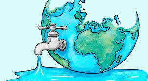

TECNOLOGÍA DE LA INFORMACIÓN II
Cuidado del Agua
Bienvenida
Galería
Guardianes del Agua
¿Quiénes somos?
Contactos
Bienvenidos al Proyecto
Este proyecto busca crear conciencia sobre la importancia del cuidado del agua en nuestras vidas.
Integrantes:
Montserrat Barajas
Alfredo Santoyo
Bruno Garnica
Campus Lomas Verdes
Docente: Beatriz Mora

Haz clic aquí